Midori matcha
A ceremonial-grade matcha brand: identity, packaging, product photography, a brand film and the launch feed, from bamboo grove to café counter.
Midori sells a ritual, not a powder. We built a dark, quiet world around the tin, so it feels like something you keep on the shelf and reach for every morning.
Matcha is everywhere and mostly looks the same: bright green, white backgrounds, stock whisks.
A matte black tin, a gold leaf mark and low, warm light, with the green kept for the powder itself.
Identity and packaging, a product photography library, a brand film and a nine-tile launch grid.

Green is the product, black is the brand. Every frame keeps the tin dark and the light low, so the only bright green on screen is the matcha itself.
One object, many moods
Studio, stone, bamboo grove and breakfast table: the tin holds its own in every setting.
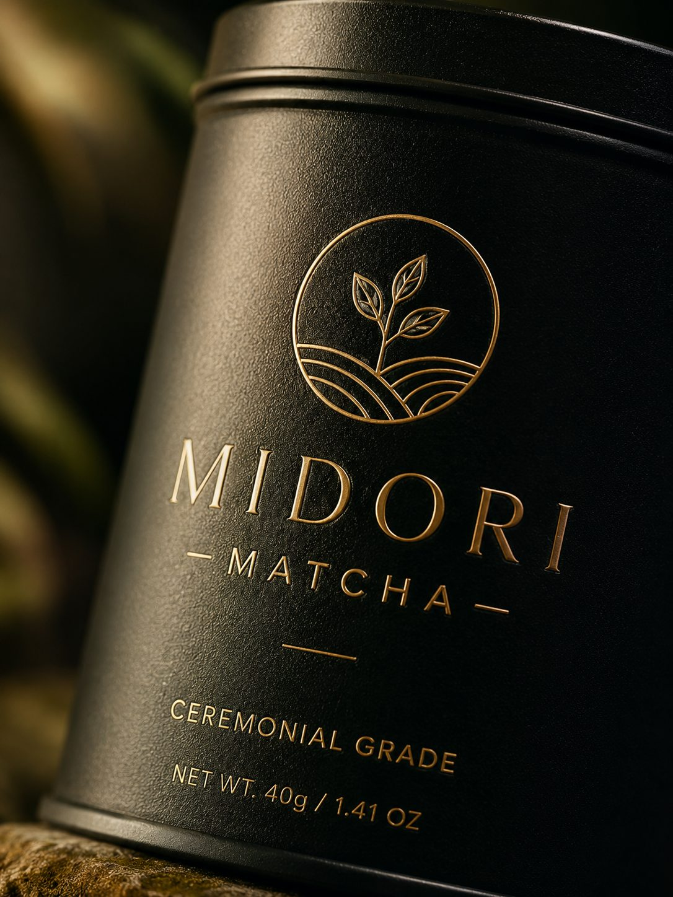
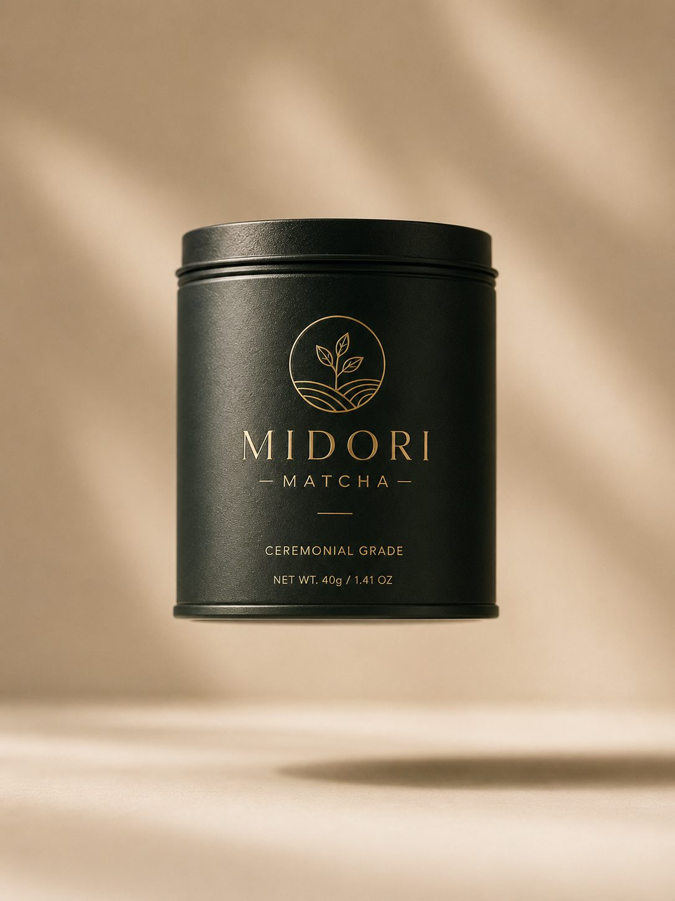
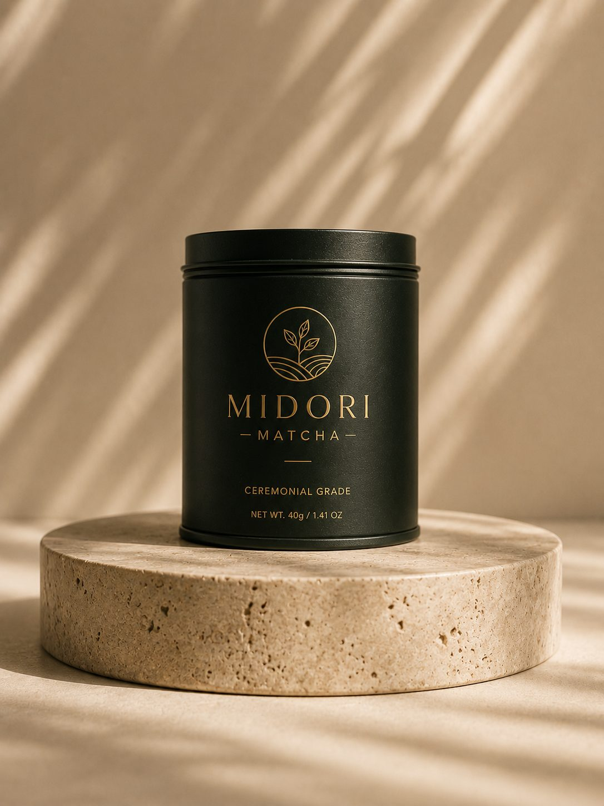
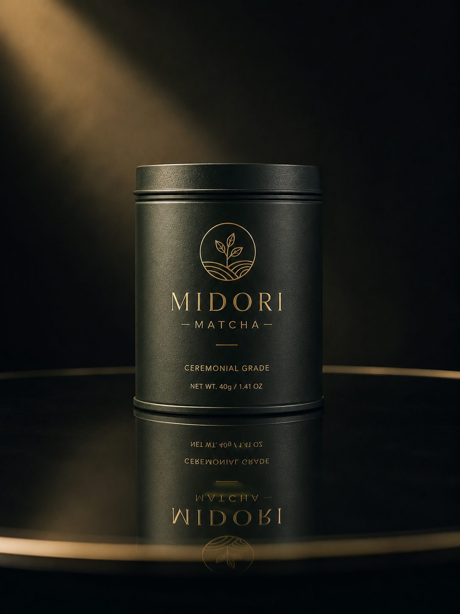
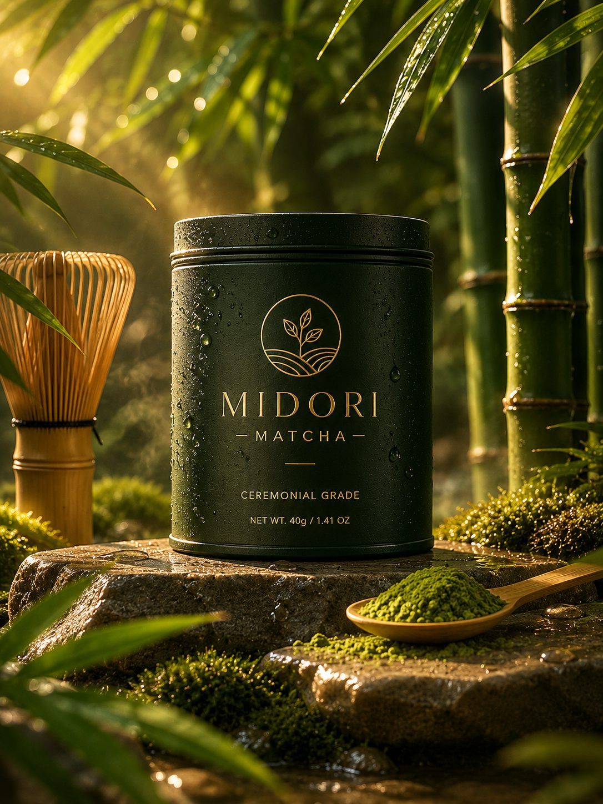
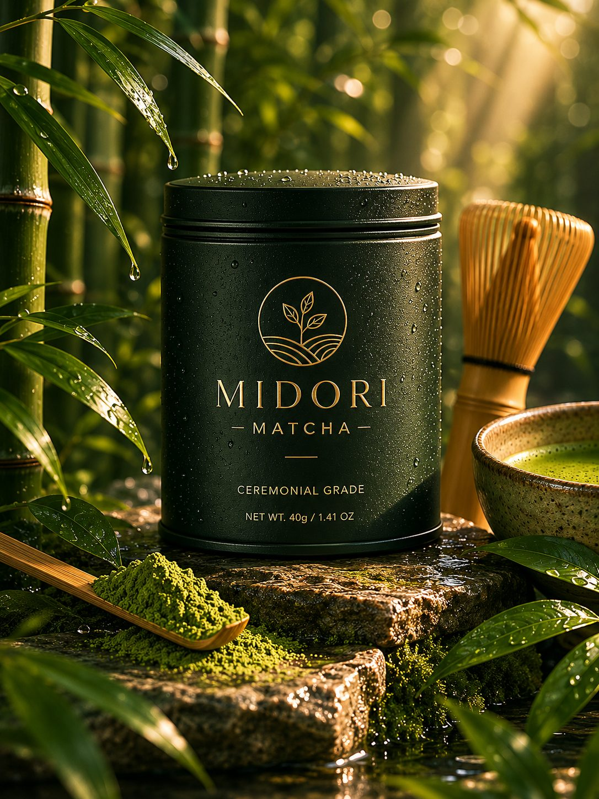
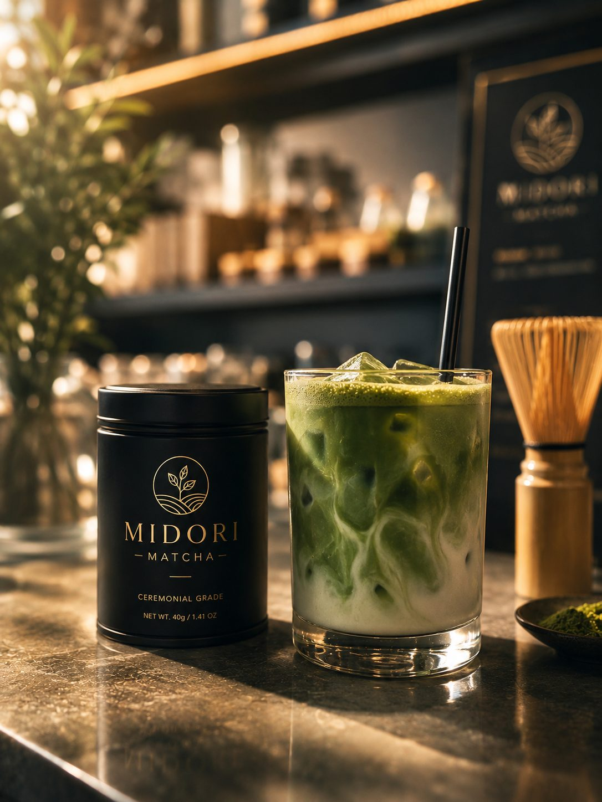
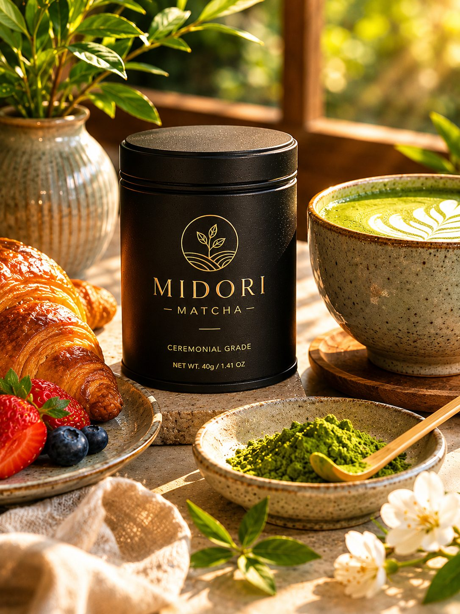
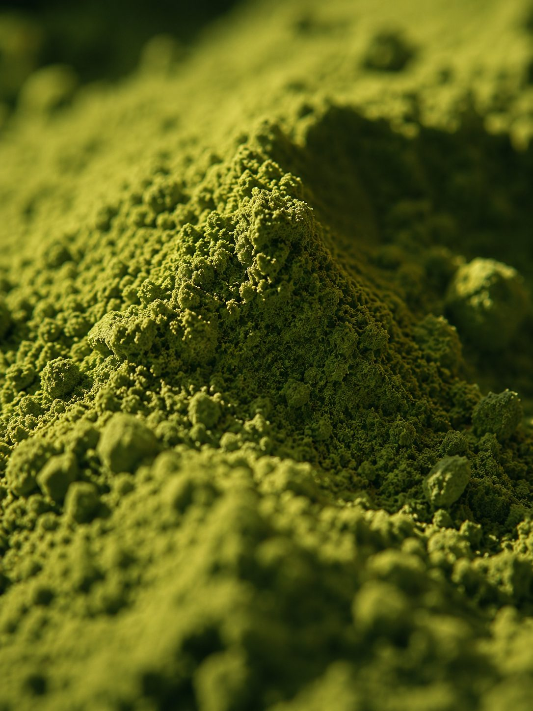
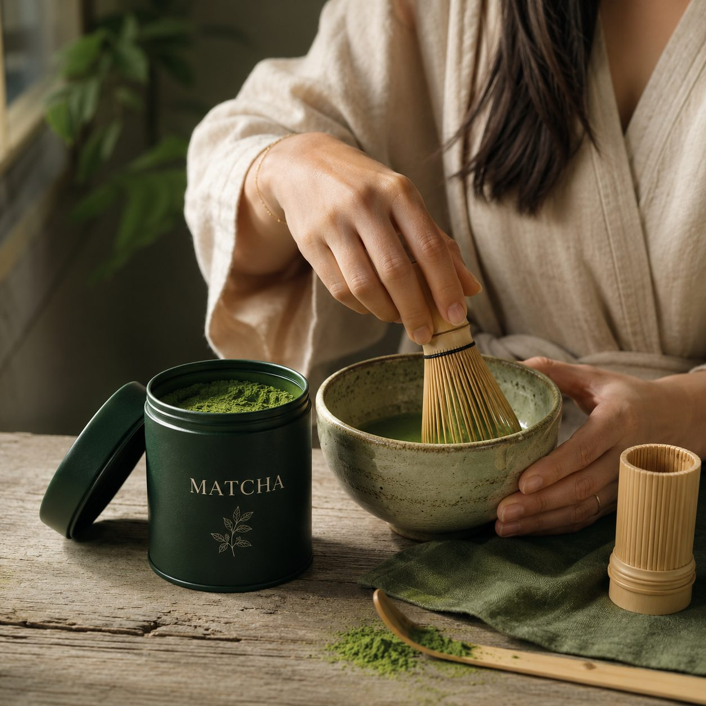
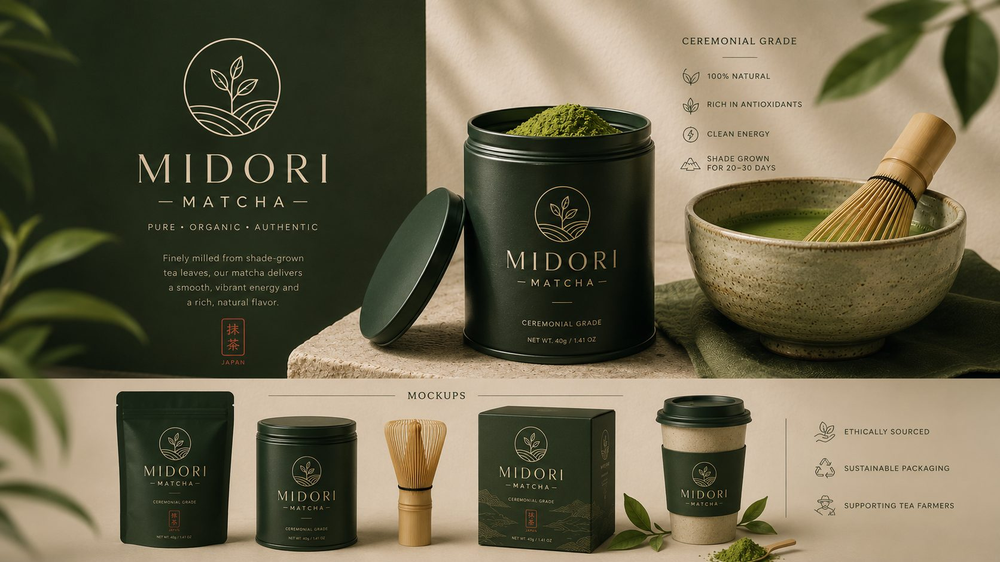
Nine tiles, one ritual
From the farm to the cup: a launch grid that reads as one story on the profile page.
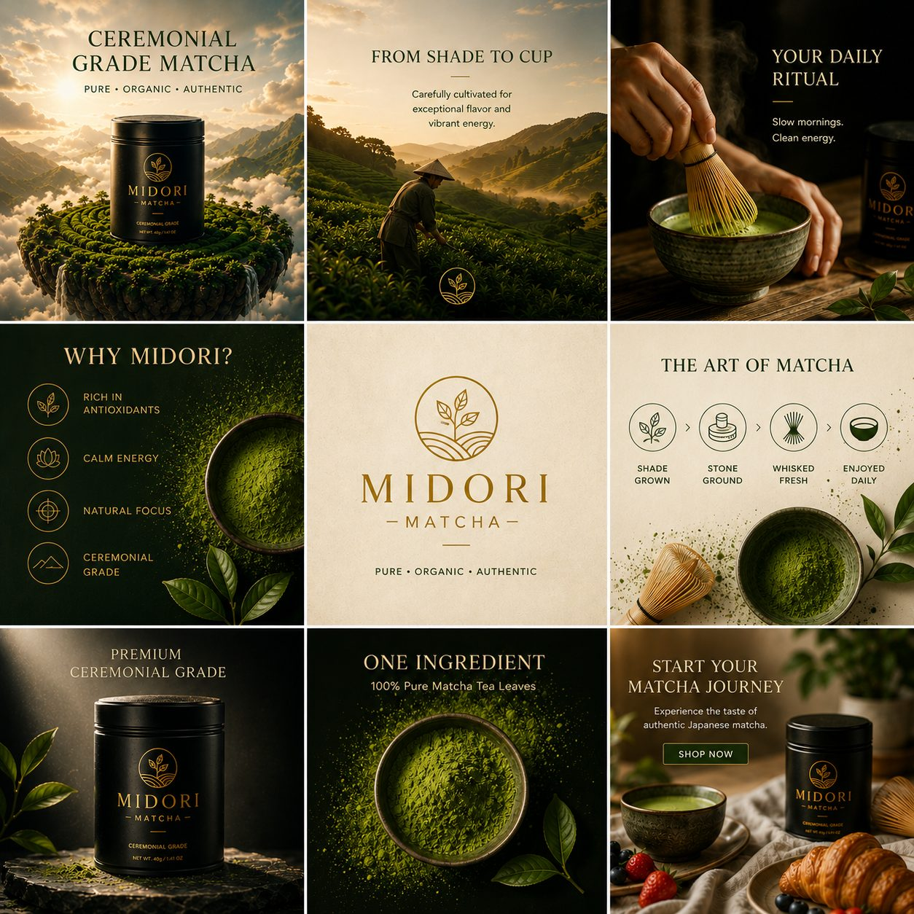
How we built it
Position
One clear idea about who the product is for and why it is different.
World
Palette, light, props and type that make every frame recognisably the brand.
Produce
Hero stills, packaging, films and feed assets made in one production loop.
Launch
Cut-downs for every screen, from the product page to the reel cover.
Have a project to bring to life?
media.crabstudio@gmail.com · +91 92136 37784